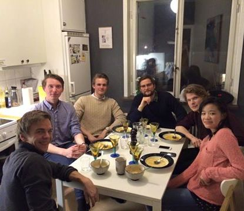

O MR O T A R A C T
V Ä L G Ö R E N H E T
N Ä T V E R K
L E D A R S K A P

R O T A R Y

V Å R AA K T I V I T E T E R

26e MAJ 2016

18e MAJ 2016

17e APRIL 2016

17e APRIL 2016

5 MARS 2016

5e JUNI 2015

22a APRIL 2015

2a APRIL 2015
10e FEBRUARI 2015
22a APRIL 2015
18e NOVEMBER 2015
25e OKTOBER 2015
K O N T A K T AO S S
Är Ni intresserad av att gå med Rotaract Linköping eller helt enkelt har frågor så finns vi tillgängliga via mejl. För övrigt kan Ni finna oss på Facebook: Rotaract Linköping

President för Rotaract Linköping Herman Svensk:
Allmän kontaktmejl: